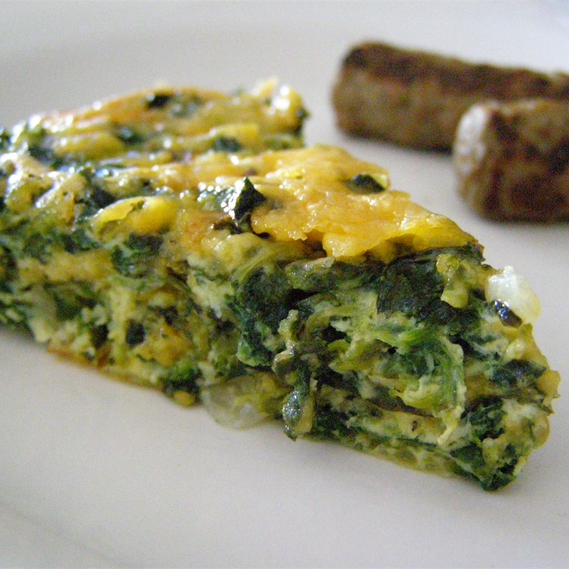

Coconut Milk Cake Recipe

Discription
I serve this in the summer for brunch with a side of sausage links and
a fresh fruit bowl!
Ingredients
- 1 tablespoon vegetable oil
- 1 onion, chopped
- 1 (10 ounce) package frozen chopped spinach, thawed and drained/li>
- 5 eggs, beaten
- 3 cups shredded Muenster cheese
- ¼ teaspoon salt
- 3 cloves garlic, minced
- ⅛ teaspoon ground black pepper
Steps
-
Preheat oven to 350 degrees F (175 degrees C).
Lightly grease a 9 inch pie pan.
-
Heat oil in a large skillet over medium-high heat.
Add onions and cook, stirring occasionally, until onions are soft.
Stir in spinach and continue cooking until excess moisture has
evaporated.
-
In a large bowl, combine eggs, cheese, salt and pepper.
Add spinach mixture and stir to blend.
Scoop into prepared pie pan.
-
Bake in preheated oven until eggs have set, about 30 minutes.
Let cool for 10 minutes before serving.